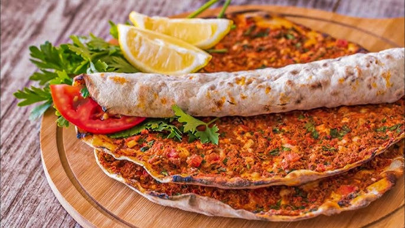

Ингредиенты:
- Говядина — 400 г
- Лапша Erişte — 300 г
- Лук — 2 шт.
- Морковь — 1 шт.
- Болгарский перец — 1 шт.
- Помидоры — 2 шт.
- Чеснок — 4 зубчика
- Томатная паста — 1 ст.л.
- Оливковое масло — 3 ст.л.
Специи:
- Pul biber — 1 ч.л.
- Nane (мята) — 1 ч.л.
- Kimyon (кумин) — 0.5 ч.л.
- Черный перец — по вкусу
- Соль — по вкусу
Приготовление:
- Обжарить мясо до корочки.
- Добавить лук и чеснок, жарить 3–4 минуты.
- Добавить морковь и перец, тушить 5 минут.
- Добавить помидоры и томатную пасту, специи, залить водой.
- Тушить 45 минут на медленном огне.
- Отварить лапшу и подавать с мясным соусом.
Пищевая ценность (~300 г):
- Калории: 420 ккал
- Белки: 25 г
- Жиры: 18 г
- Углеводы: 38 г
- Клетчатка: 4 г
← Назад